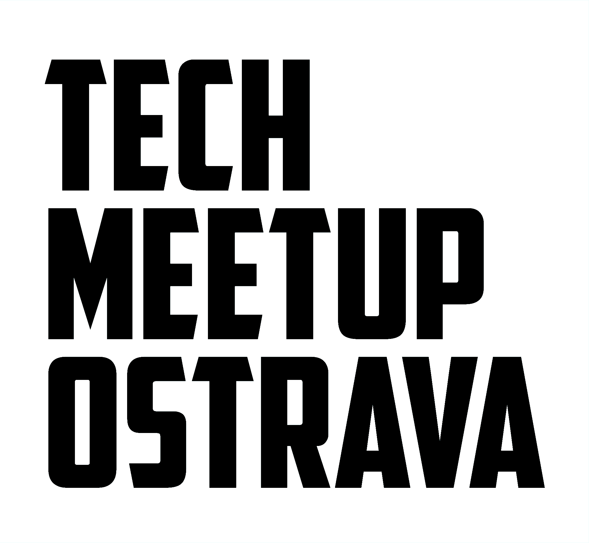 ## Creating a Design System from Scratch: Lessons learned [Tomas Litera](https://literat.dev) <img src="static/lmc-logo.png" width="150" /> <aside class="notes"> - pozdravit - představit se - Jak jsme vytvářeli design systém od píky a co jsme se naučili </aside> --- ## Context <aside class="notes"> - než začnu, tak chci celou tuhle přednášku uvést do správného kontextu - takže nejprve něco o mě </aside> --- ### 🙋♂️ Something about me <p class="fragment">started with PHP with little bit of JavaScript</p> <p class="fragment">worked with AWS and Serverless</p> <p class="fragment">played with Node.js and React</p> <p class="fragment">now working on a Design System</p> <p class="fragment">=> Fullstack Pirate</p> <aside class="notes"> - začínal jsem s PHP a javascriptem - pracoval jsem s AWS a Serverless - hrál jsem s Node.js a Reactem - a teď vytvářím design systém, o kterém jsem ještě minulý rok nic nevěděl - takže se tak trochu považuji za fullstack piráta </aside> --- ### 👨👨👦👦 Something about team 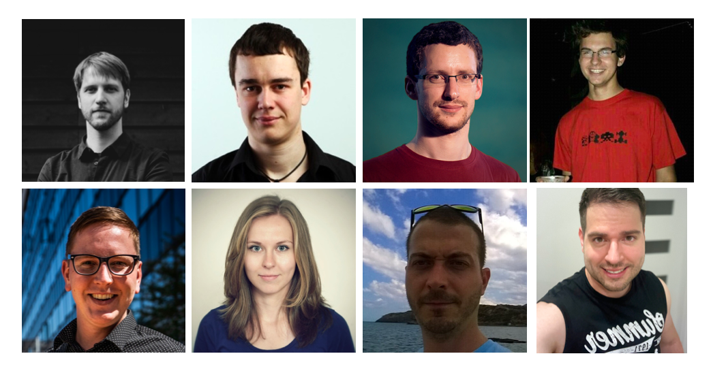 <aside class="notes"> - teď už trochu víc k tématu - to, o čem tu budu mluvit není jenom moje práce - je to práce celého týmu lidí - možná některé poznáváte ;-) </aside> --- ### 🛠️ Something about Techstack 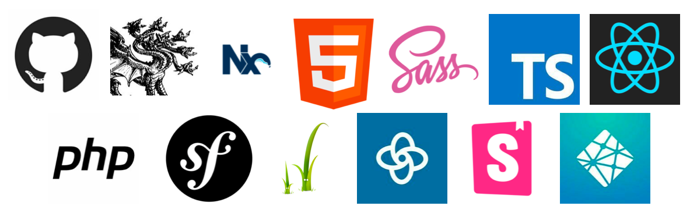 <aside class="notes"> - taky bych chtěl zmínit na úvod pár technikálií - celý design system vytváříme jako open source - a za pomoci aktuálního stacku technologií - jako třeba Nx + Lerna (ano, máme monorepo) - typescript + react - php + twig (jo, máme komponenty pro PHP, ale o tom později) </aside> --- ## What it is going to be about > Short story about what I have learned during a development of Design System <aside class="notes"> - a o čem to tedy bude? - o tom, co jsem se já jako vývojář naučil o vytváření design systémů - tak jdeme na to </aside> --- 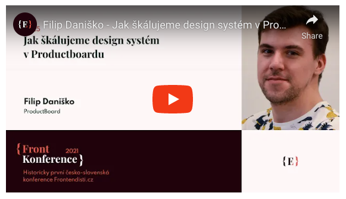 <a href="https://www.youtube.com/embed/PaSwiE5UQA4">https://www.youtube.com/embed/PaSwiE5UQA4</a> <aside class="notes"> - pro začátek: tohle je filip daniško - a minulý rok mluvil na Front konferenci o škálování design systémů - super vstupní bod do problematiky - i my s ním začali </aside> --- 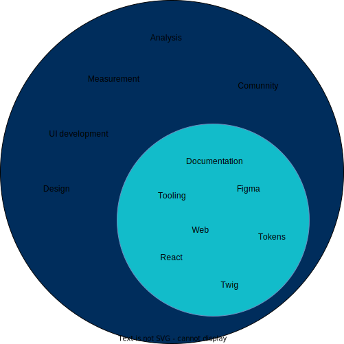 <aside class="notes"> - jenže filip mluvil o analýzách a měření a dalších věcech - tam my ještě nejsem - my se pohybujeme v tom menším kruhu - dokumentace, tooling a kód - a o tom to dnes primárně bude </aside> --- ### 🎬 How it started <p class="fragment">demand for new product design</p> <p class="fragment">demand for product redesigns</p> <p class="fragment">now</p> <p class="fragment">yesterday was late</p> <p class="fragment">fast and furious 🏎</p> <aside class="notes"> - takže jak to začalo? - poptávkou pro produktových designech - poptávkou po redesignech produktů - ideálně hned - včera bylo pozdě </aside> --- #### Portfolio of products 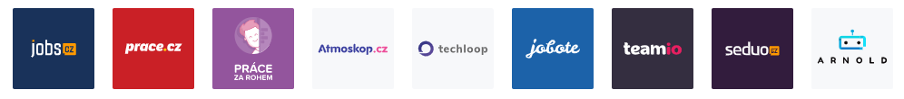 <aside class="notes"> - super, tak jako proč ne - LMC jako spoelčnost má ale spoustu produktů - tady vidíte některé z nich - jobsy, práce, atmoskop, seduo, robot arnold, atd.. </aside> --- #### 🎨 Existing UI libraries <aside class="notes"> - tyhle produkty mají naštěstí už i svoje UI knihovny - takže je na čem stavět </aside> --- ##### Jobs UI 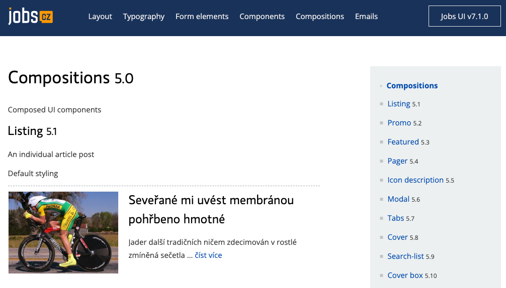 --- ##### Seduo UI 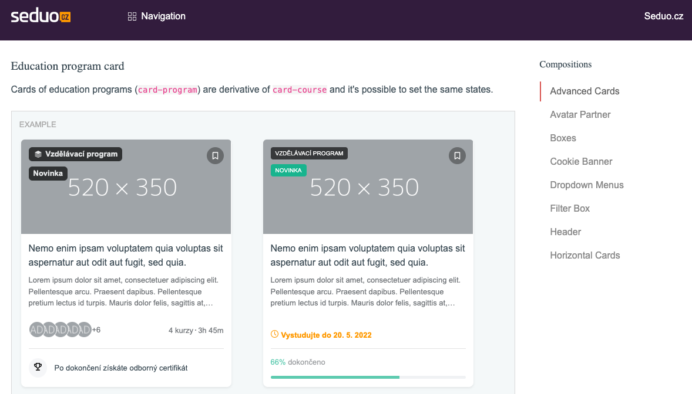 --- ##### Teamio UI 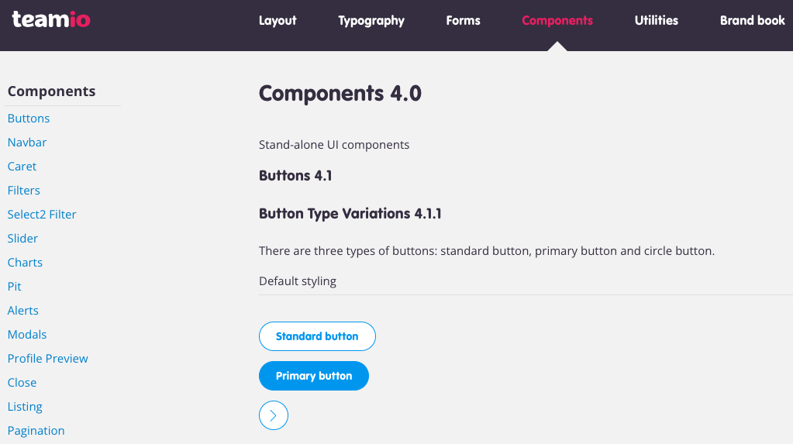 --- ### 💫 Lessons Learned <aside class="notes"> - tak a těď konečně k těm věcem, co jsem se na základě toho všeho naučili </aside> --- ### 🤹♂️ The Multibrand <aside class="notes"> - děláme multibrand - víte co to je? - a znáte třeba automobilku Volkswagen? </aside> --- 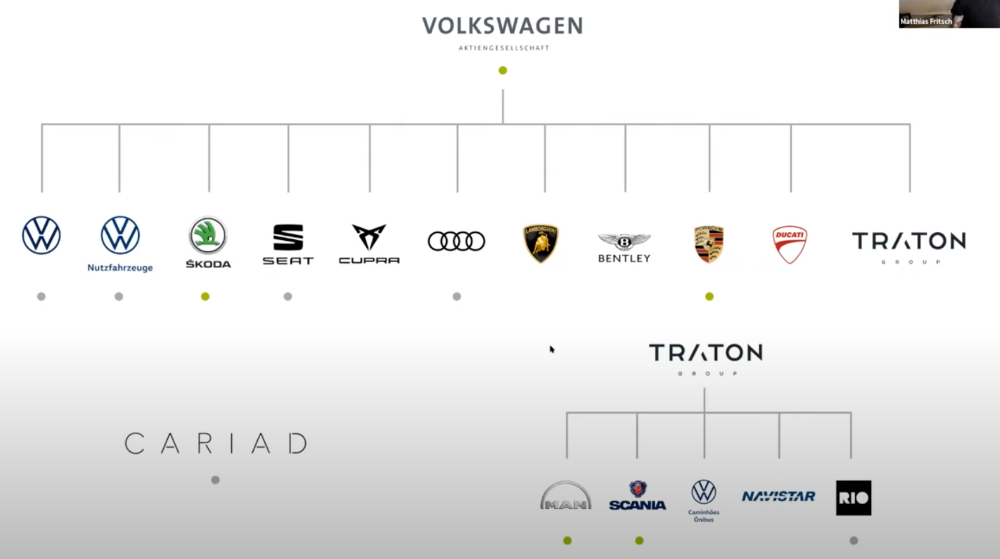 <aside class="notes"> - tohle je multibrand - jedna firma - více značek - každá s vlastním designem </aside> --- #### 🥇 Single brand **One product, one design, one technology** - Apple Human Interface Design - Google Material Design - Microsoft Fluent - Shopify Polaris - Ant Design - IBM Carbon - Adobe Spectrum - Attlasian Design System - Nucleus - Orbit <a href="https://designsystemsrepo.com/design-systems/">https://designsystemsrepo.com/design-systems/</a> <aside class="notes"> - abychom pochopili, co to vlastně děláme, tak jsme se museli vrátit na začátek - co je to jednoduché, co dělají všichni? - single brand - jedna firma, jeden design, jedna technologie - všechny tyhle design systémy jsou tak dělané - určitě některé z nich znáte </aside> --- #### 💅 Theming Multiple "themes" of one design <p class="fragment">light or dark mode</p> <p class="fragment">switch to high contrast</p> <p class="fragment">repaint the component</p> <aside class="notes"> - ok, ale spousta z nich se dá přeci přebarvovat - jasně, "theming" - změna světlého a tmavého módu - zvyšování kontrastu - nebo prostě přebarvení komponenty - to ale stále není multibrand </aside> --- #### 🏅 The real multi-brand Multiple products with multiple designs 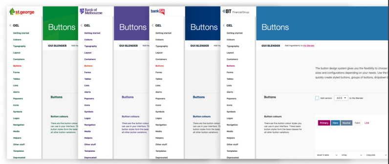 <a href="https://gel.westpacgroup.com.au/">https://gel.westpacgroup.com.au/</a> <aside class="notes"> - opravdový multibrand vám umožní změnit nejen barvy, ale kompletně vzhled - odsazení, velikosti písma, atd - jakop například tady GEL </aside> --- #### Product vs Project The design system must not be a project. **It MUST be a product.** > The key information is that for design system to work, it has to be product development and it has to be approached that way. > It's a long-term journey that doesn't end. <aside class="notes"> - to bychom měli multibrand - dále už se dostáváme k samotnému vývoji - hlavní informaci, kterou jsme si odnesli z filipovi přednášky - je že DS musí být produkt - ne projekt, ale reálný produktový vývoj se vším všudy - protože to nebude hned - budete ho rozvíjet, udržovat a měnit společně s vašimi dalšími produkty - potřebuje prostě vlastní tým vývojářu, manažera a všechno to kolem </aside> --- #### 👩🎨 Design vs Development 👨💻 <p class="fragment">Design System vs UI library</p> <p class="fragment">UX/Designer vs Developer</p> <p class="fragment">Design => UI library</p> <p class="fragment">Close cooperation of Designer and Developer</p> <aside class="notes"> - dál a víc na dřeň - v DS se potkávají dva proudy, které spolu musí spolupracovat - design a vývoj - a proto DS není jenom ledajaká knihovna, kterou vidí vývojářy - ale je to celý komplenxní systém, který designer nejdřív musel vymyslet a nakreslit - a až potom se dal přetavit do kódu - od začátku a do konce je to o úzké spolupráci designéra s vývojářem - a jakmile k tomu dojde, začnou se dít magické věci </aside> --- 💬 > For the first time, there was a “holistic view” of the elements, of all their possible combinations, and it was “easy” for me and my colleagues to spot inconsistencies, detect side effects, and find duplications and common patterns. <a href="http://www.didoo.net/2018/02/from-zero-to-cosmos-part-1/">http://www.didoo.net/2018/02/from-zero-to-cosmos-part-1/</a> <a href="http://www.didoo.net/2018/02/from-zero-to-cosmos-part-2/">http://www.didoo.net/2018/02/from-zero-to-cosmos-part-2/</a> <a href="http://www.didoo.net/2018/02/from-zero-to-cosmos-part-3/">http://www.didoo.net/2018/02/from-zero-to-cosmos-part-3/</a> <aside class="notes"> - poprvé začnete vidět elementy a jejich kombinace - duplikace a nekonzistence v designu - společné vzory - začnete si všímat hraničních stavů - znovupoužitelnosti - a velmi brzy začnete vnímat změny ve visuální konzistenci - celkový pocit z lepší kvality aplikace - a i zrychlení vývoje </aside> --- ### 📚 Documentation <aside class="notes"> - a to ještě není konec - tohle všechno bylo potřeba zdokumentovat </aside> --- #### Design-System-As-A-Service 💥 Supernova platform <p class="fragment">multibrand support</p> <p class="fragment">integration with Figma</p> <p class="fragment">documentation</p> <p class="fragment">component health status page</p> <p class="fragment">exporters</p> <a href="http://supernova.io/">http://supernova.io/</a> <aside class="notes"> - dneska už jsou služby snad na vše - i na design system - v tomhle ohledu je tu ale jediná Supernova - a má všechno, co potřebujeme </aside> --- 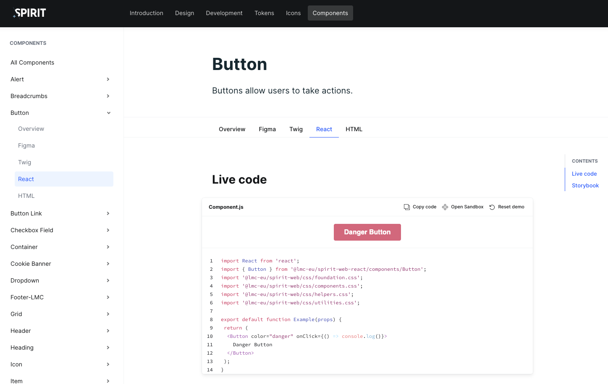 <aside class="notes"> - takže do ní napojíte datové zdroje a voilá </aside> --- #### 🚑 Component Health Status 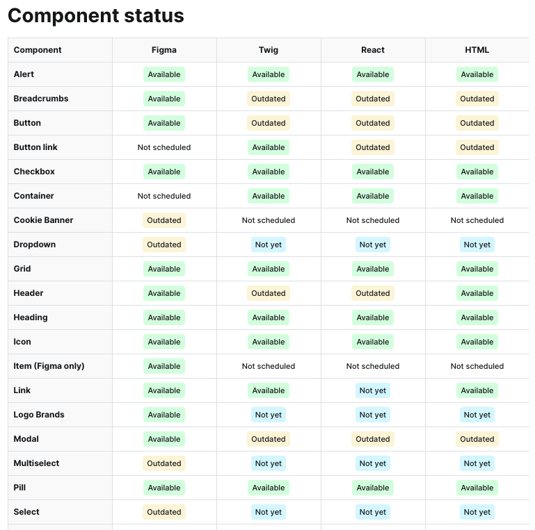 <aside class="notes"> - seznam komponent s jejich stavem - super stránka, ale má to i své nevýhody - manuální editace - žádná automatizace - chybí definice pravidel, kdy a za jakých podmínek jsou komponenty v jakém stavu </aside> --- #### 🛳 Exporters Figma => Supernova => GitHub repository => Package => App - design tokens - icons 👨🎨 => 👨💻 > Designers are responsible for release of design updates aka "release & publish" <aside class="notes"> - ale za to má exportéry - a tak designér je přímo zodpovědný za změny v designu - protože ty se automagicky dostávají rovnou do repozitáře s komponentami - děláme z designára tak trochu vývojáře </aside> --- 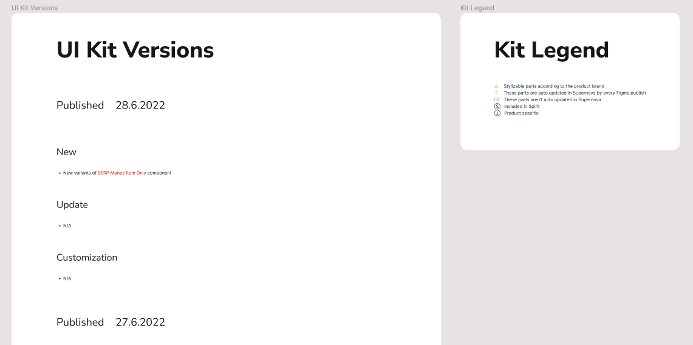 <aside class="notes"> - a nutíme je verzovat a publikovat </aside> --- ### 🏗️ Architecture --- #### Common UI library Spirit Design System => Jobs Design System Common UI library => Product UI library --- #### Packages Monorepo <p class="fragment">design-tokens - <i>design variables</i></p> <p class="fragment">icons - <i>svg assets and react icons</i></p> <p class="fragment">web - <i>styles and JS functions</i></p> <p class="fragment">web-react - <i>react components</i></p> <p class="fragment">web-twig - <i>twig components</i></p> --- #### 🛡️ Typescript **system in the system** defining stable component API using props and types 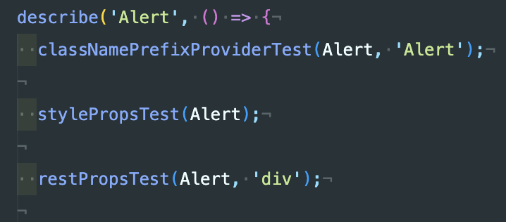 --- #### 🚦 Style/System Props 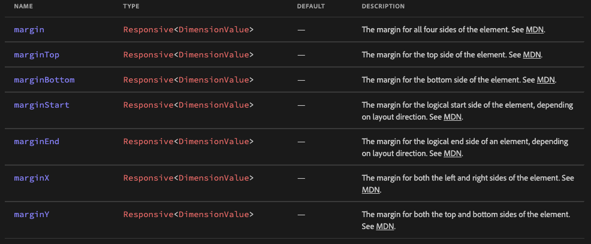 Be defensive but allow custom modifications - UNSAFE_className - UNSAFE_style <a href="https://react-spectrum.adobe.com/react-spectrum/styling.html">https://react-spectrum.adobe.com/react-spectrum/styling.html</a> --- #### JSX in Twig templates 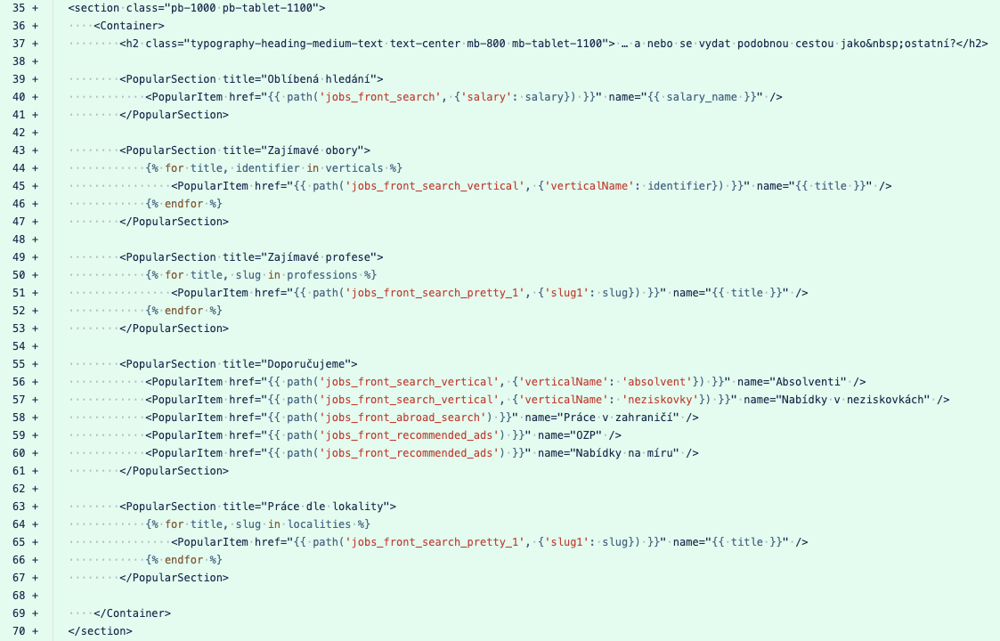 --- 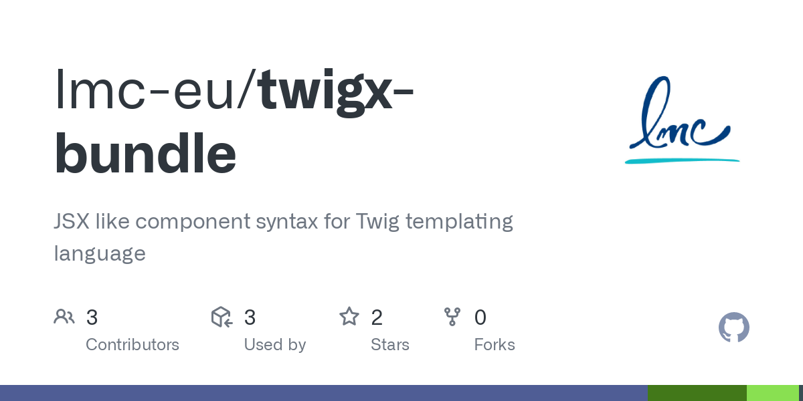 --- ### 🏎️ Back to the Future <aside class="notes"> - a co na nás tedy ještě čeká v budoucnu - prakticky všechno, o čem mluvil filip ve své přednášce </aside> --- ### 🕵️♂️ Missing <p class="fragment">measurement</p> <p class="fragment">adoption rate</p> <p class="fragment">usage of components</p> <p class="fragment">deprecation and health</p> <p class="fragment">missing props and lack of features of the components</p> <p class="fragment">candidates for a shared component and adoption to Spirit</p> --- ### 🤺 Technological challenges <p class="fragment">CSS-in-JS</p> <p class="fragment">React Native Apps</p> <p class="fragment">Next.js Apps</p> <p class="fragment">Styled components</p> <p class="fragment">design tokens exported in JavaScript</p> <aside class="notes"> - a do toho ještě další technologické výzvy v podobě... </aside> --- > Design System is a product that supports other Products and let them grow. <aside class="notes"> - a co si z toho všechno na závěr odnést - že DS je produkt, který podporuje ostatní produkty v jejich růstu, tak se k němu i tak chovejme </aside> --- # 👋 <a href="https://techmeetup-design-system-from-scratch.netlify.app/">https://techmeetup-design-system-from-scratch.netlify.app/</a> <aside class="notes"> - děkuji za pozornost </aside> --- <img src="static/spirit.png" /> <a href="https://github.com/lmc-eu/spirit-design-system">https://github.com/lmc-eu/spirit-design-system</a>